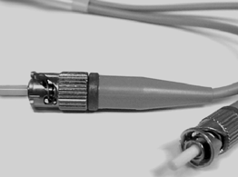

El cable de fibra óptica puede conducir transmisiones de luz moduladas. Si se compara con otros medios de redes, es más caro; sin embargo, no es susceptible a la interferencia electromagnética y ofrece velocidades de datos más altas que cualquiera de los otros tipos. El cable de fibra óptica no transporta impulsos eléctricos -como hacen los cables de cobre-, sino que transporta pulsos de luz, originados por dispositivos de diodos emisores de luz LED o por un láser.
Como se ve en la figura está compuesto por dos fibras envueltas para revestimientos separados. Si se observa una sección transversal de este cable, veremos que cada fibra óptica se encuentra rodeada por capas de material amortiguador protector -normalmente un material plástico como Kevlar- y un revestimiento externo.
El revestimiento exterior protege todo el cable y generalmente es de plástico y cumple con los códigos aplicables de incendio y construcción. El propósito del Kevlar es brindar mayor amortiguación y protección a las frágiles fibras de vidrio que tienen el diámetro de un cabello. Siempre que los códigos requieran que los cables de fibra óptica deban estar bajo tierra, a veces se incluye un alambre de acero inoxidable como refuerzo.
atenuación
Es la cantidad de señal que se pierde en viajar por el medio de transmisión, desde el origen hasta el nodo de recepción. La atenuación en una fibra óptica se mide en decibelios.
Las partes que guían la luz en una fibra óptica se denominan núcleo y revestimiento. El núcleo es generalmente un vidrio de alta pureza con un alto índice de refracción. Cuando el vidrio del núcleo está recubierto por una capa de revestimiento de vidrio o de plástico con un índice de refracción abajo, la luz se captura al núcleo de la fibra. Este proceso se denomina reflexión interna total y permite que la fibra óptica actúe como un "tubo de luz", guiando la luz a través de enormes distancias, incluso cuando debe atravesar codos.
La longitud máxima de cable recomendada entre nodos es de 2.000 metros y su rendimiento es alto. Actualmente se utiliza para el troncal de la red.
- 
- Conector de fibra óptica
El cable de fibra óptica tiene dos modos: monomodo y multimodo.
La fibra monomodo se utiliza principalmente para comunicaciones largas, el diámetro del núcleo central es de 8 a 10 mm y el diámetro del revestimiento de 125 mm. El diámetro del núcleo es mucho más pequeño que el de las fibras multimodo, por lo que solamente se transmite una onda de luz a la vez a cada fibra. La fuente luminosa en la comunicación por fibra monomodo es el láser.
Aviso
La intensidad del láser hace que sea peligroso mirar directamente una fibra óptica: por ejemplo, puede causar heridas en los ojos.
La distancia de transmisión no es tan grande como en las fibras monomodo, ya que el ancho de banda disponible es más pequeña y la fuente de luz, más débil. La fuente de luz de las fibras multimodo es un LED.
La comparación entre fibra monomodo y multimodo también se puede apreciar en la figura.